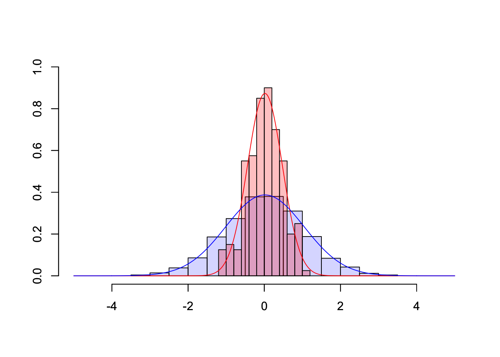

9.5 Exponential Smoothing
Exponential smoothing was proposed in the late 1950s (Brown, 1959; Holt, 1957; Winters, 1960), and has motivated some of the most successful forecasting methods. Forecasts produced using exponential smoothing methods are weighted averages of past observations, with the weights decaying exponentially as the observations get older. In other words, the more recent the observation the higher the associated weight. This framework generates reliable forecasts quickly and for a wide range of time series, which is a great advantage and of major importance to applications in industry.
\[ L_t = \alpha \cdot y_t + (1-\alpha)\cdot(L_{t-1}+T_{t-1}) \\ T_t = \gamma \cdot (L_t - L_{t-1}) + (1-\gamma) \cdot T_{t-1} \] When all values are given and calculated one can easily generate forecast using the following forecasting function for future time horizons \(h\).
\[ f_t(h) = L_t + T_t \cdot h \]
However as the dependence between a value and the previous value is recursive and can easily be seen from the formulas above, the values for the Level \(L_t\) and the Trend \(T_t\) reach at some point a time index of \(t=0\), which is obviously not observed. These values at \(t=0\) are called initial values and need to be set using an appropriate strategy. While there are many possible ways (including complicated procedures for estimating the initial values) a straight forward and sufficiently performant procedure to set the values is given by:
\[ L_0 = y_1 \\ T_0 = y_2 - y_1 \]
In order to generate a forecast we now already have some data and performed some explanatory analysis. To generate a forecasting model we now need to implement the method in R so that we do not have to calculate everything by hand. Afterward, we need to apply the function that we wrote and calculate all the level and trend values. However, in order to calculate these values, we need the smoothing constants \(\alpha\) and \(\gamma\). However, in practice, these are unknown, which is why we need to estimate them. Arguing in the same way as we do for regression, the chosen values for \(\alpha\) and \(\gamma\) should configure our exponential smoothing value in a way that it fits best to the data, which we can measure using an error measure such as the Mean Squared Error (MSE). After obtaining the best values for the smoothing constants, we can finally apply exponential smoothing to calculate level and trend values and afterward use the forecasting function to extrapolate the data for future horizons, which is called forecasting.
9.5.1 Implementing HES
In order to have a simple example let us implement and illustrate the whole process using a very short and artificially generated time series instead of the long youtube subscribers series. This facilitates development and the explanation of the concepts. Our example time series consists of only four observations:
#R> Time Series:
#R> Start = 1
#R> End = 4
#R> Frequency = 1
#R> [1] 195 198 200 203Implementing Holt’s Exponential Smoothing Method can be done directly by translating the given equations into R code. These smoothing equations are applied iteratively. In addition to the Level and Trend
\[ y_t = \hat{y}_t + \hat{e}_t \\ \hat{y}_t = \hat{L}_t + \hat{T}_t \]
holtExponentialSmoothing <- function(yt, alpha, gamma){
# Setting initial Values
l0 <- yt[1]
t0 <- yt[2] - yt[1]
# Intialize vectors for iterative calculations
level <- l0
trend <- t0
# Calculate fit
for (idx in 2:(length(yt)+1)){
level[idx] <- alpha * yt[idx-1] + (1-alpha) * (level[idx-1] + trend[idx-1])
trend[idx] <- gamma * (level[idx]-level[idx-1]) + (1-gamma) * trend[idx-1]
}
# Calculate and Return results
fitted <-(trend+level)[-length(trend)]
residuals <- yt - fitted
return(list(fitted=fitted,residuals=residuals,yt=yt,
trend=trend,level=level,
alpha=alpha, gamma=gamma,
l0=l0, t0=t0))
}9.5.2 Finding best alpha and gamma values
Following the line of arguments that we already discussed we are essentially searching for a MSE that we can calculate based on the residuals of a given model.
\[ MSE_{\alpha,\gamma} = \frac{1}{T} \sum_{i=1}^{T} \hat{e}_i^2 \] We are now looking for the combination of \(\alpha\) and \(\gamma\) that minimizes the MSE in dependence of the smoothing constants that we can configure. While there are many possible optimization routines available, most of them are algebraically complex and would need additional theoretical knowledge in order to understand and use them. Therefore, we are applying a more direct search routine, which is called grid search.
Grid searching routines try a combination of plausible values and calculate the error measure of interest for all desired combinations of the values. From a computational perspective, this approach is not very efficient but works reasonably well for our purpose. The following code snippet performs this parameter search and returns over a parameter space with a comparably small resolution. By increasing the resolution the process takes considerably longer, but the considered parameters are more precise in return.
resolution <- 10
parameterspace <- seq(0,1,1/resolution)
mseMat <- matrix(NA, nrow=length(parameterspace), ncol=length(parameterspace))
for(adx in parameterspace){
for(gdx in parameterspace){
rdx <- round(adx*resolution + 1, 0) # Recalculate Row index
cdx <- round(gdx*resolution + 1, 0) # Recalculate Col index
mod <- holtExponentialSmoothing(yt=yt, alpha=adx, gamma=gdx)
mseMat[rdx,cdx] <- mean(mod$residuals^2)
}
}
rownames(mseMat) <- paste0("a=",parameterspace)
colnames(mseMat) <- paste0("g=",parameterspace)
round(mseMat,3)#R> g=0 g=0.1 g=0.2 g=0.3 g=0.4 g=0.5 g=0.6 g=0.7 g=0.8 g=0.9
#R> a=0 12.500 12.500 12.500 12.500 12.500 12.500 12.500 12.500 12.500 12.500
#R> a=0.1 9.396 8.965 8.557 8.171 7.805 7.460 7.134 6.827 6.538 6.266
#R> a=0.2 7.186 6.581 6.044 5.568 5.150 4.784 4.467 4.195 3.964 3.769
#R> a=0.3 5.625 4.997 4.479 4.059 3.724 3.464 3.269 3.128 3.035 2.980
#R> a=0.4 4.531 3.958 3.527 3.214 2.999 2.863 2.790 2.765 2.777 2.815
#R> a=0.5 3.770 3.285 2.959 2.757 2.649 2.610 2.620 2.664 2.727 2.799
#R> a=0.6 3.245 2.857 2.630 2.520 2.491 2.515 2.572 2.646 2.725 2.805
#R> a=0.7 2.892 2.594 2.452 2.413 2.440 2.504 2.587 2.679 2.772 2.866
#R> a=0.8 2.666 2.451 2.380 2.397 2.467 2.564 2.677 2.798 2.929 3.072
#R> a=0.9 2.540 2.401 2.393 2.464 2.579 2.721 2.884 3.069 3.282 3.532
#R> a=1 2.500 2.435 2.493 2.624 2.803 3.020 3.277 3.584 3.958 4.421
#R> g=1
#R> a=0 12.500
#R> a=0.1 6.011
#R> a=0.2 3.609
#R> a=0.3 2.958
#R> a=0.4 2.872
#R> a=0.5 2.875
#R> a=0.6 2.881
#R> a=0.7 2.962
#R> a=0.8 3.233
#R> a=0.9 3.830
#R> a=1 5.000The round when recalculating the row and column indices rdx and cdx ensures that we only get real indices and do not run into precision errors, when the resolution parameter is increased.
Given the calculated Mean Square Error Values for all combinations, we can now select the best parameter combination, by filtering the parameterspace vector based using the MSE values. These values lead to the lowest MSE for the training set. They, therefore, represent the values that lead to the best adaption of the method to the data (as the error is minimized). We now assume that the parameter combination that creates the best fit to the data is also good when extrapolating the time series to future values and leads to small error values there as well.
#R> [1] 0.8#R> [1] 0.2hesGridSearch that performs the paramter estimation conditional on the time-series yt and with a user defineable resolution argument.
## Solution to Excercise
hesGridSearch <- function(yt, resolution = 10){
parameterspace <- seq(0,1,1/resolution)
mseMat <- matrix(NA, nrow=length(parameterspace), ncol=length(parameterspace))
for(adx in parameterspace){
for(gdx in parameterspace){
rdx <- round(adx*resolution + 1, 0) # Recalculate Row index
cdx <- round(gdx*resolution + 1, 0) # Recalculate Col index
mod <- holtExponentialSmoothing(yt=yt, alpha=adx, gamma=gdx)
mseMat[rdx,cdx] <- sqrt(mean(mod$residuals^2))
}
}
rownames(mseMat) <- paste0("a=",parameterspace)
colnames(mseMat) <- paste0("g=",parameterspace)
alpha.best <- parameterspace[which.min(apply(mseMat, 1, min))]
gamma.best <- parameterspace[which.min(apply(mseMat, 2, min))]
return(c(alpha=alpha.best,gamma=gamma.best))
}REMARK: Please keep in mind that the examples in this course are designed to illustrate a simplified version of the forecasting process and to get an impression of a quite successful forecasting method. However, real-world applications are usually much more complex. While this is true for most methods themselves this also applies to the parameter estimation and optimization processes. From a practical perspective, all aspects of statistical learning such as bagging, boosting, cross-validation and constructing ensembles are also incorporated in the model building process but are not covered here.
9.5.3 Generating Forecasts
The process of generating the actual forecasts conditional on the estimated parameters is now fairly easy. Given the forecasting formula above one only needs the last fitted level and last fitted trend which are combined to produce a linear forecast. The function forecastHES below additionally considers the time series properties (tsp) of the original time series in the model object (mod$yt) and changes the timeline of the forecast so that it can be later plotted conveniently in the same plot.
#R> alpha gamma
#R> 0.8 0.2mod <- holtExponentialSmoothing(yt=yt,alpha=params[1],gamma=params[2])
forecastHES <- function(mod, H){
fc <- tail(mod$level,1) + tail(mod$trend, 1) * 1:H
fc <- ts(fc,start=tsp(mod$yt)[2]+1, end=tsp(mod$yt)[2]+H,frequency = frequency(mod$yt))
return(fc)
}
fc <- forecastHES(mod, H = 3)
fc#R> Time Series:
#R> Start = 5
#R> End = 7
#R> Frequency = 1
#R> [1] 205.3977 207.8910 210.3844plot(yt, ylim=c(190,215),xlim=c(1,7),type="b",
main="Example Time Series and Forecast")
lines(fc, col="red",type="b")
grid()